A tymczasem w Cameracie...
.
2017-01-15
„Dwudziestolatki, dwudziestolatki to ja i ty…”tak, tak drodzy nasi fani…już śpiewamy dla Was 20 lat. Dzisiaj KONCERT JUBILEUSZOWY CAMERATY!!!
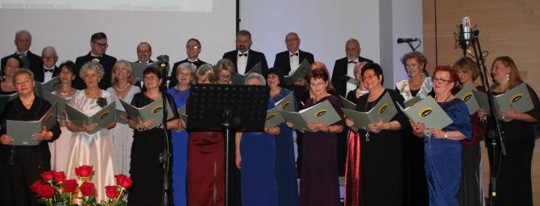
Dla naszych gości taki koncert fajna sprawa … a dla nas? Najpierw długo ciężka praca, teraz przygotowania a potem…
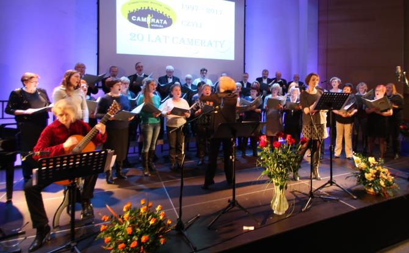 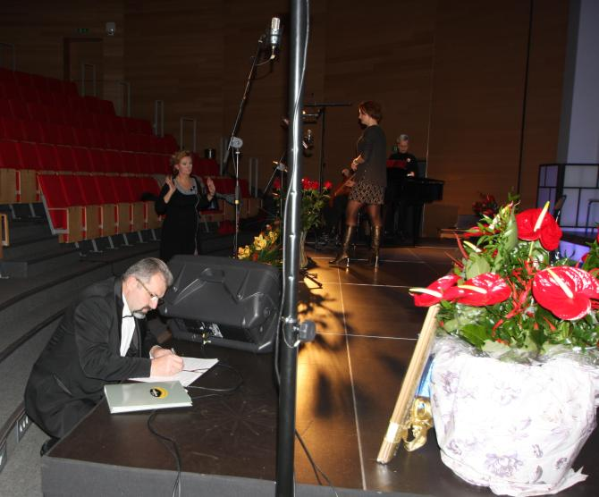
super fajna sprawa :)
Ufff! już po próbie. Teraz „wskakujemy” w „superowe kiecki” (panowie w smokingi)
i mamy jeszcze trochę czasu żeby odpocząć przed koncertem. A więc siadamy, bo jeszcze sobie postoimy.
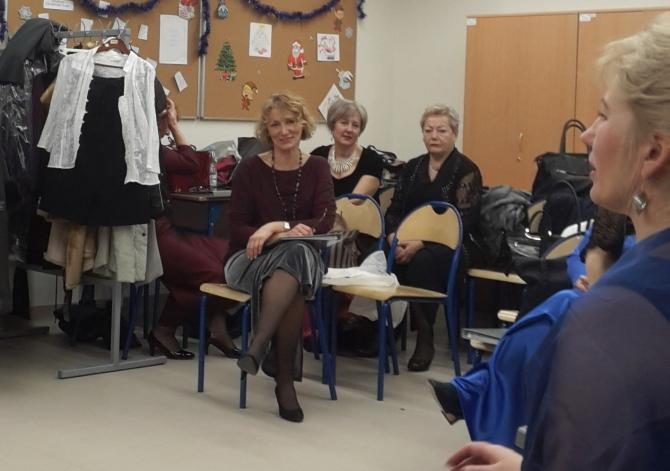 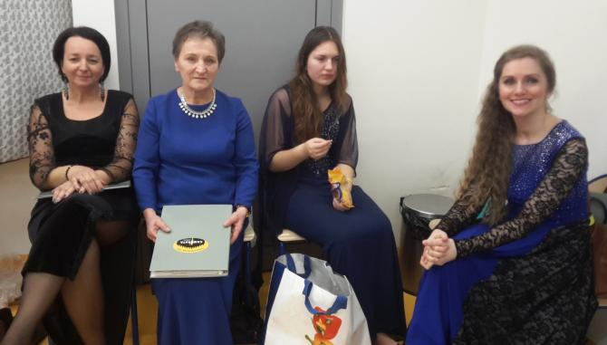 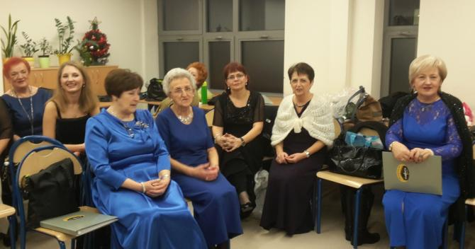
Zaczynamy… krokiem poloneza.
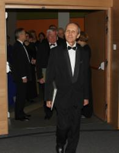 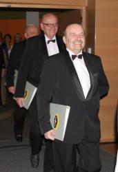 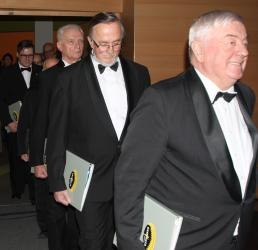 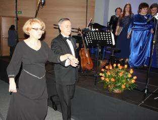 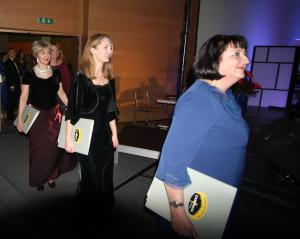 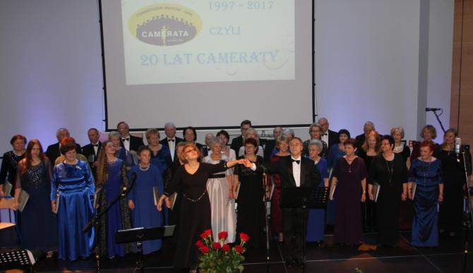
Gości zaproszonych przywitali Elżbieta Achinger i Marek Turchan.
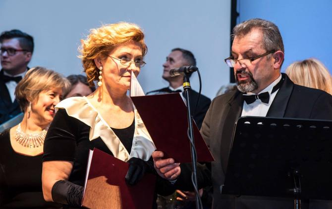
Całość prowadzi dyr. Izabela Szota
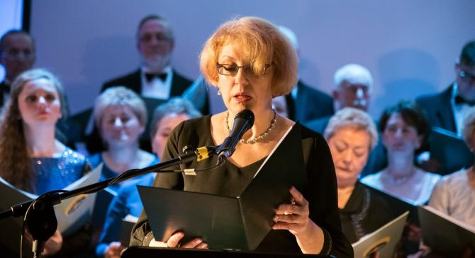
i tak zaczynamy nasz koncert pt. „Muzyka filmowa z historią Cameraty w tle”.Znane utwory zyskały nowe teksty, które specjalnie na Jubileusz Cameraty ułożyła Ewa Roeske-Tracz, opisująca fraszkami i wierszem historię chóru i jego członków.
Koncert rozpoczął się od refleksji:
„Czy to ta mała dziewczynka, chłopiec, co śpiewać chciał i grać...
Ona swym głosem zachwyciła, a on śpiewaniem uwiódł ją,
Odtąd w muzyce zakochani – śnią…”
by zyskać puentę:
„… Ten dar śpiewania żyje w nas, pragniemy śpiewać cały czas…
Chwalmy więc Pana za to bo muzyka lekiem jest na zło
i szczęściem nas napełnia. Alleluja!...”
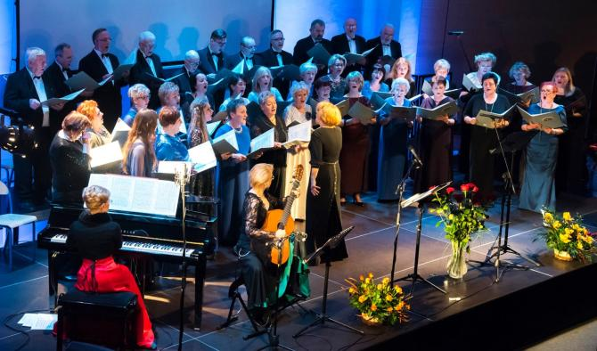
Na swój koncert jubileuszowy do pięknej Auli Kampusu Wielickiego chór zaprosił Katarzynę Puch (sopran) i Małgorzatę Włodarzcyk (gitara), które śpiewały w Cameracie jako uczennice wielickiego Liceum, a obecnie swoje życie zawodowe związały z muzyką. Katarzyna Puch jest absolwentką Akademii Muzycznej w Katowicach (klasa śpiewu prof. Henryki Januszewskiej-Stańczyk). Koncertuje jako solistka i kameralistka w kraju i za granicą, współpracuje z Chórem Polskiego Radia w Krakowie oraz Operą Krakowską, prowadzi także działalność pedagogiczną.
Małgorzata Włodarczyk ukończyła krakowską Akademię Muzyczną (klasa gitary dra hab. Michała Nagy’a). Obecnie jest doktorantką dr hab. Renaty Żełobowskiej-Orzechowskiej w swej macierzystej uczelni, koncertując równocześnie jako solistka i kameralistka w kraju i za granicą. Prowadzi również działalność pedagogiczną.
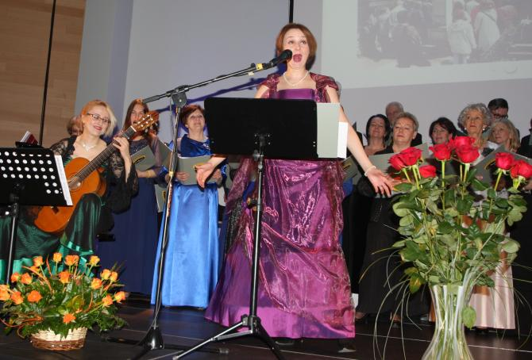
Brzmienie chóru podkreślił akompaniament fortepianowy Renaty Żełobowskiej-Orzechowskiej, znakomitej pianistki, kameralistki, wykładowcy Akademii Muzycznej w Krakowie, która wspólpracuje z takimi artystami, jak Kaja Danczowska, Alison Pearce, Wiesław Ochman, Mariusz Kwiecień, Alicja Węgorzewska, czy Anna Dymna.
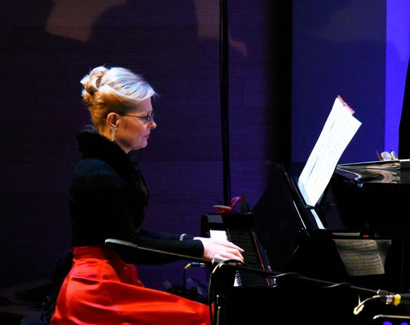
Koncert powoli dobiega do końca.
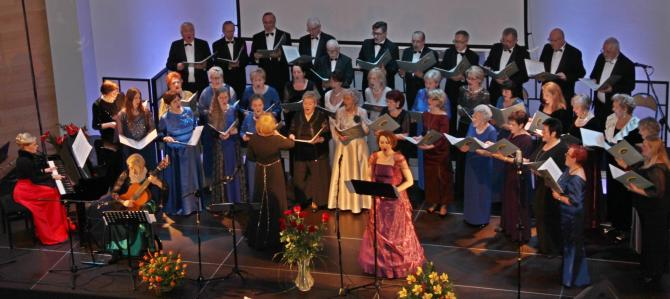
Licznie zgromadzona publiczność
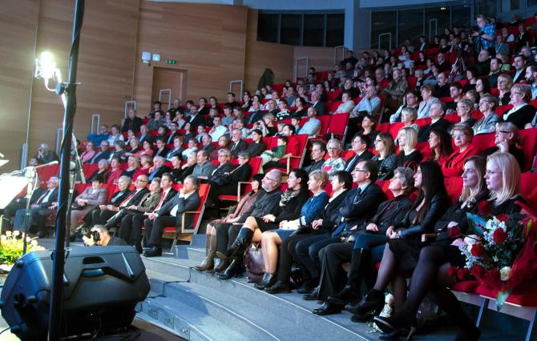
dała nam brawa na stojąco!
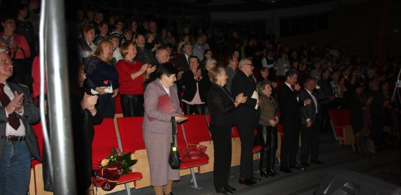
A na koniec były kwiaty, podziękowania dla tych, którzy wspierają działalność Cameraty, którzy są w Cameracie od początku, którzy organizują jej codzienną pracę, pozyskują sponsorów, prowadzą kronikę, stronę internetową, przygotowują warsztaty i wyjazdy.
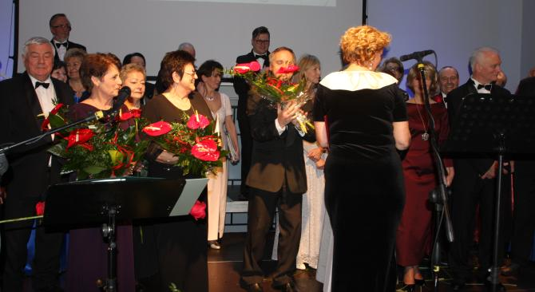 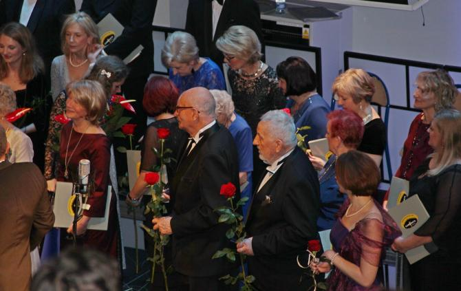 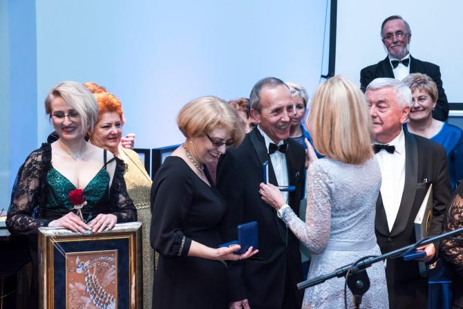
Wreszcie moc gratulacji i życzeń od Burmistrza Wieliczki, które przekazała Magdalena Golonka (Kierownik Wydziału Kultury, Turystyki i Sportu UMiG Wieliczka), Agnieszki Szczepaniak (Dyrektor Centrum Kultury i Turystyki w Wieliczce),
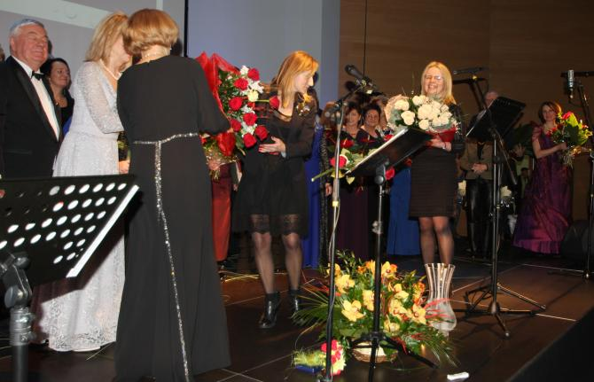
Małopolskiego Banku Spółdzielczego w Wieliczce, zaprzyjaźnionych zespołów: Towarzystwa Śpiewaczego Lutnia (Jadwiga Szado), Zespołu Regionalnego Mietniowiacy (Maria Idzi), Chóru Dziewczęcego Ziarenko (życzenia wyśpiewane przez Elżbietę Gawor, która kiedyś też śpiewała w Cameracie), Zespołu Yanabanda (Sylwia Dzióbek), Klubu Przyjaciół Wieliczki (Jadwiga Duda).
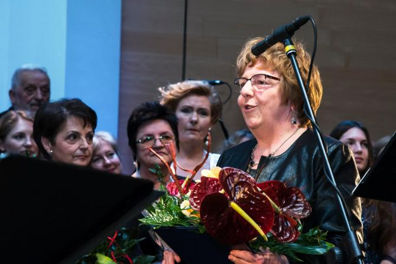 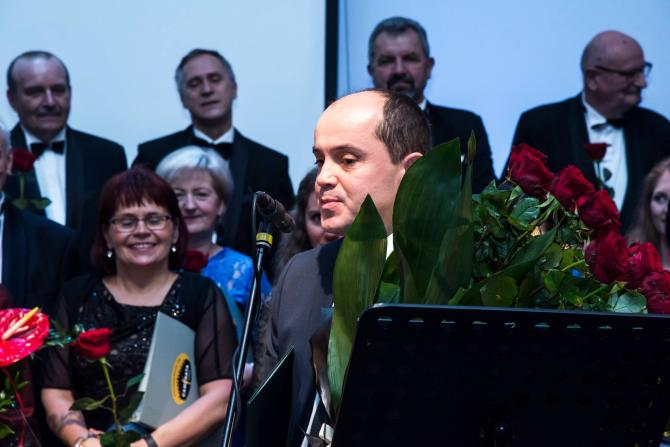
List Gratulacyjny przysłała także Urszula Rusecka – Posłanka na Sejm RP.Więc …
„Do Cameraty wstąp, tu ludzie fajni są,
Muzyka porwie Cię i będziesz jak we śnie,
Przyjdź i przekonaj się…”
Tymi słowami naszej piosenki na bis zakończyliśmy koncert.
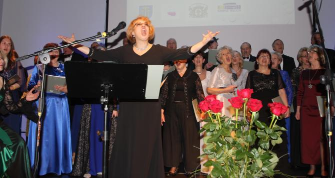
Przy fortepianie Ewa Roeske-Tracz
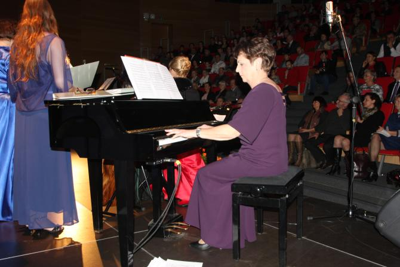
Kończymy wspólnym zdjęciem
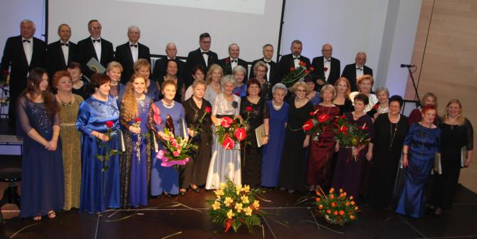
I jeszcze małe co nieco i wielki tort (pyszny mniam)
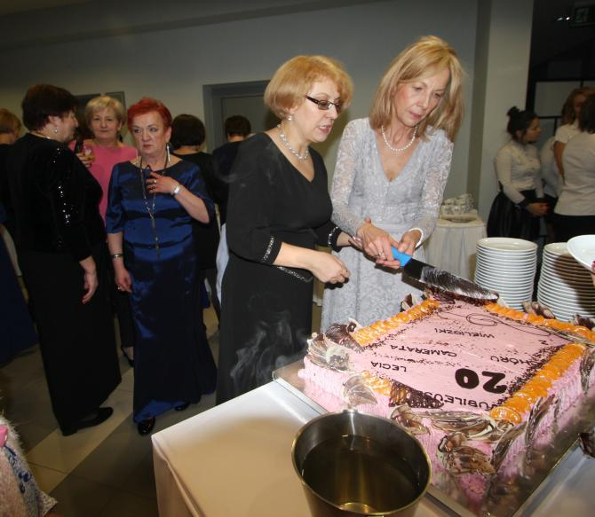
Galeria zdjęć 20_lat Krótka historia naszych 20 lat:
Camerata rozpoczęła swoją działalność w styczniu 1997 r. pod kierunkiem Moniki Bachowskiej. W 1999 roku pracę z chórem podjęła Izabela Szota. 40-osobowy zespół posiada w repertuarze ponad 250 utworów o różnorodnym charakterze, obejmujących okres od renesansu po współczesność. Do najważniejszych osiągnięć chóru należą: Złote Pasmo w Małopolskim Konkursie Chórów (Kraków 2000), Srebrne Pasma w Małopolskim Konkursie Chórów (Niepołomice 2002, 2003), III miejsce w Ogólnopolskim Konkursie Ars Liturgica (Toruń 2004), III miejsce w dwóch kategoriach w Myślenickim Festiwalu Pieśni Chóralnej (2004), Srebrne Struny w Małopolskim Konkursie Chórów (Niepołomice 2005, 2013), I miejsca w dwóch kategoriach w Miechowskim Przeglądzie Pieśni Chóralnej (2008), I miejsce w Konkursie „Tyskie Wieczory Kolędowe” (Tychy 2010), wyróżnienie w Krakowskim Międzynarodowym Festiwalu Chóralnym (Kraków 2010), Brązowy Dyplom w Międzynarodowym Konkursie „Rybnicka Jesień Chóralna” (Rybnik 2014).
Camerata zaśpiewała ponad 500 koncertów w Polsce oraz Austrii, Białorusi, Czechach, Estonii, Francji, Hiszpanii, Litwie, Łotwie, Niemczech, Rosji, Słowacji, Ukrainie, Węgrzech, Włoszech i Watykanie.
Z pewnością niesamowitych wzruszeń dostarczyło wykonanie „Roty” przy grobie Marii Konopnickiej na Cmentarzu Łyczakowskim we Lwowie, „Praojcom naszym niechaj będzie sława” przy grobie Matki i Serca Syna na wileńskiej Rossie, „Czerwone maki na Monte Cassino” przy grobie Generała Andersa i jego żolnierzy, którzy dokonali tego, co innym wydawało się niemożliwe, wreszcie oprawa Mszy Św. na Cmentarzu w Katyniu, gdzie przy dźwiękach dzwonu bijącego z głębi ziemi zabrzmiała „Bogurodzica”. Wielkim wyróżnieniem dla chóru były koncerty w Bazylice Św. Piotra i Pawła w Rzymie, Kościele Św. Magdaleny w Paryżu w 200 rocznicę powstania Księstwa Warszawskiego, czy w hiszpańskim Montserrat.
Camerata od początku bierze udział w wielu ważnych wydarzeniach na terenie Gminy, często będąc ich inicjatorem, jak Wielickie Wieczory Kolęd (ostatnia 11 edycja miała miejsce 6 stycznia w wielickim klasztorze OO. Franciszkanów).
Tak prężna działalność chóru możliwa jest dzięki życzliwości i wsparciu wielu osób i instytucji, jak Firma Regis, Gmina Wieliczka, Powiat Wielicki, Małopolski Bank Spółdzielczy w Wieliczce, Kopalnia Soli w Wieliczce.
Camerata współpracowała z wieloma znakomitymi solistami, akompaniatorami (Małgorzata Westrych, Bogumiła Gizbert-Studnicka, Maria Rydzewska), chórami, orkiestrami, Teatrem Hagiograf, czy Bunkrem Sztuki w Krakowie (performance rozgrywający się w przestrzeni Galerii autorstwa Zorki Wollny).
/Tekst: Izabela Szota i Małgorzata Wysocka – Cebula/
Bardzo dziękuję pani A.Rogalskiej "FOTO Rogalska" za udostępnienie zdjęć.

© Stowarzyszenie Muzyczne Chór Camerata Wieliczka
Projekt i wykonanie:  Prowadzenie strony oraz zdjęcia: Małgorzata Wysocka-Cebula
Prowadzenie strony oraz zdjęcia: Małgorzata Wysocka-Cebula